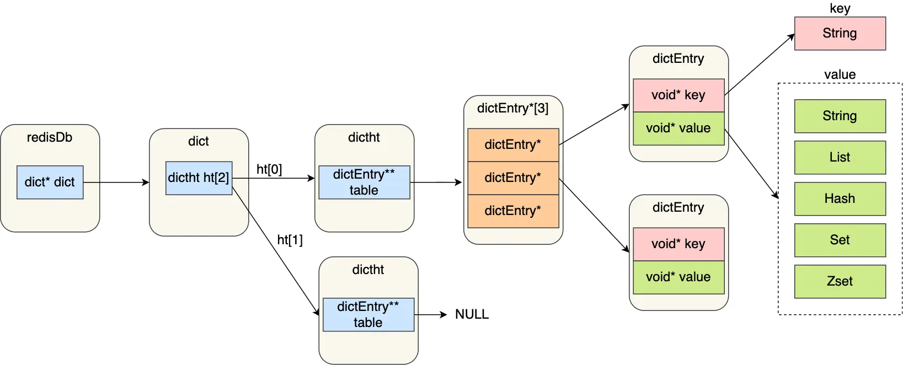
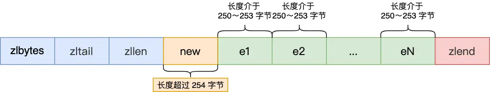
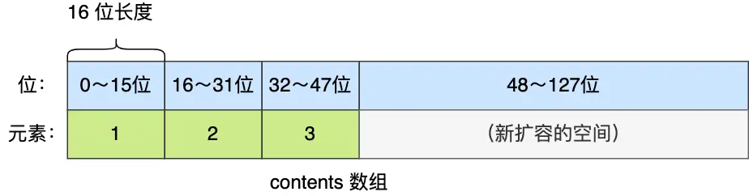
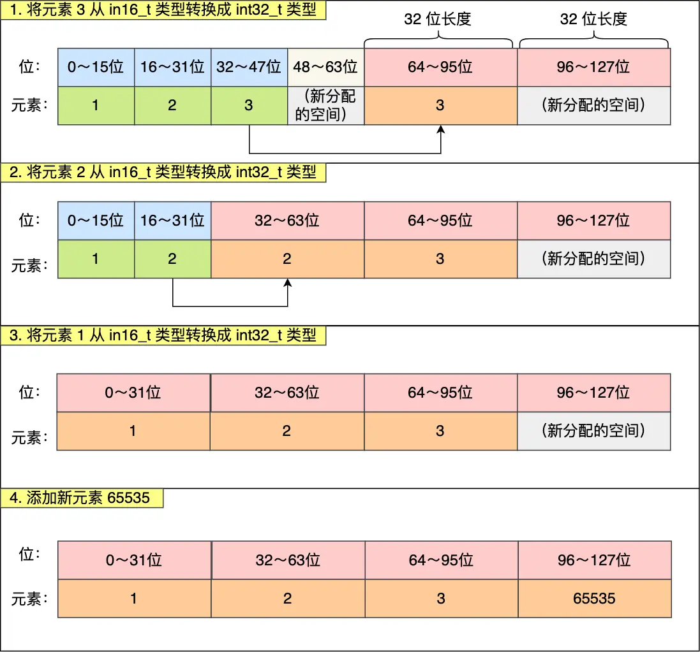
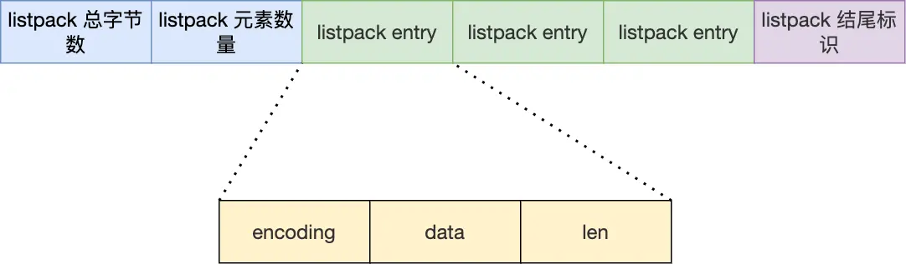

1. 数据结构⚓

1.1 对象⚓
Redis 的键值对中的 key 就是字符串对象，而 value 可以是字符串对象，也可以是集合数据类型的对象，比如 List 对象、Hash 对象、Set 对象和 Zset 对象。
Redis 使用了一个哈希表保存所有键值对，哈希表的最大好处就是让我们可以用 O(1) 的时间复杂度来快速查找到键值对。哈希表其实就是一个数组，数组中的元素叫做哈希桶。
哈希桶存放的是指向键值对数据的指针dictEntry*，这样通过指针就能找到键值对数据，然后因为键值对的值可以保存字符串对象和集合数据类型的对象，所以键值对的数据结构中并不是直接保存值本身，而是保存了 void * key 和 void * value 指针，分别指向了实际的键对象和值对象，这样一来，即使值是集合数据，也可以通过 void * value 指针找到。

- redisDb 结构，表示 Redis 数据库的结构，结构体里存放了指向了 dict 结构的指针；
- dict 结构，结构体里存放了 2 个哈希表，正常情况下都是用「哈希表 1」，「哈希表 2」只有在 rehash 的时候才用，具体什么是 rehash，我在本文的哈希表数据结构会讲；
- ditctht 结构，表示哈希表的结构，结构里存放了哈希表数组，数组中的每个元素都是指向一个哈希表节点结构（dictEntry）的指针；
- dictEntry 结构，表示哈希表节点的结构，结构里存放了
void * key 和 void * value指针。
void * key 和 void * value 指针指向的是 Redis 对象，Redis 中的每个对象都由 redisObject 结构表示：

1.2 SDS⚓
1.2.1 C 语言字符串的缺陷⚓
C 语言字符串的缺陷：
- C 语言获取字符串长度的时间复杂度是 O（N）（这是一个可以改进的地方）
- 字符串里面不能含有“\0”字符，否则最先被程序读入的“\0”字符将被误认为是字符串结尾，这个限制使得 C 语言的字符串只能保存文本数据，不能保存像图片、音频、视频文化这样的二进制数据（这也是一个可以改进的地方）
- C 语言标准库中字符串的操作函数是很不安全的，容易发生缓冲区溢出（这是一个可以改进的地方）
1.2.2 SDS 结构设计⚓
Redis 5.0 的 SDS 的数据结构：

- len，记录了字符串长度。这样获取字符串长度的时候，只需要返回这个成员变量值就行，时间复杂度只需要 O（1）。
- alloc，分配给字符数组的空间长度。这样在修改字符串的时候，可以通过 alloc - len 计算出剩余的空间大小，可以用来判断空间是否满足修改需求，如果不满足的话，就会自动将 SDS 的空间扩展至执行修改所需的大小，然后才执行实际的修改操作，所以使用 SDS 既不需要手动修改 SDS 的空间大小，也不会出现前面所说的缓冲区溢出的问题。
- flags，用来表示不同类型的 SDS。一共设计了 5 种类型，分别是 sdshdr5、sdshdr8、sdshdr16、sdshdr32 和 sdshdr64
- buf[]，字符数组，用来保存实际数据。不仅可以保存字符串，也可以保存二进制数据。
SDS 的优点：
- O（1）复杂度获取字符串长度
- 二进制安全。可存储包含“\0”的数据。
- 不会发生缓冲区溢出
- 节省内存空间
SDS 扩容的规则代码如下：
hisds hi_sdsMakeRoomFor(hisds s, size_t addlen)
{
... ...
// s 目前的剩余空间已足够，无需扩展，直接返回
if (avail >= addlen)
return s;
//获取目前 s 的长度
len = hi_sdslen(s);
sh = (char *)s - hi_sdsHdrSize(oldtype);
//扩展之后 s 至少需要的长度
newlen = (len + addlen);
//根据新长度，为 s 分配新空间所需要的大小
if (newlen < HI_SDS_MAX_PREALLOC)
//新长度<HI_SDS_MAX_PREALLOC 则分配所需空间*2 的空间
newlen *= 2;
else
//否则，分配长度为目前长度 +1MB
newlen += HI_SDS_MAX_PREALLOC;
...
}
SDS 结构中有个 flags 成员变量，表示的是 SDS 类型。
Redis 一共设计了 5 种类型，分别是 sdshdr5、sdshdr8、sdshdr16、sdshdr32 和 sdshdr64。
这 5 种类型的主要区别就在于，它们数据结构中的 len 和 alloc 成员变量的数据类型不同，表示字符数组长度和分配空间大小不能超过的上限。
之所以 SDS 设计不同类型的结构体，是为了能灵活保存不同大小的字符串，从而有效节省内存空间。比如，在保存小字符串时，结构头占用空间也比较少。
Redis 在编程上还使用了专门的编译优化来节省内存空间，即在 struct 声明了 __attribute__ ((packed)) ，它的作用是：告诉编译器取消结构体在编译过程中的优化对齐，按照实际占用字节数进行对齐。
1.3 链表⚓
1.3.1 数据结构⚓
链表节点结构设计：
typedef struct listNode {
//前置节点
struct listNode *prev;
//后置节点
struct listNode *next;
//节点的值
void *value;
} listNode;
链表结构设计：
typedef struct list {
//链表头节点
listNode *head;
//链表尾节点
listNode *tail;
//节点值复制函数
void *(*dup)(void *ptr);
//节点值释放函数
void (*free)(void *ptr);
//节点值比较函数
int (*match)(void *ptr, void *key);
//链表节点数量
unsigned long len;
} list;
dup、free、match 函数可以自定义实现。
1.3.2 优缺点⚓
Redis 的链表实现优点如下：
- listNode 链表节点的结构里带有 prev 和 next 指针，获取某个节点的前置节点或后置节点的时间复杂度只需 O(1)，而且这两个指针都可以指向 NULL，所以链表是无环链表；
- list 结构因为提供了表头指针 head 和表尾节点 tail，所以获取链表的表头节点和表尾节点的时间复杂度只需 O(1)；
- list 结构因为提供了链表节点数量 len，所以获取链表中的节点数量的时间复杂度只需 O(1)；
- listNode 链表节使用
void*指针保存节点值，并且可以通过 list 结构的 dup、free、match 函数指针为节点设置该节点类型特定的函数，因此链表节点可以保存各种不同类型的值；
链表的缺陷：
- 链表每个节点之间的内存都是不连续的，意味着无法很好利用 CPU 缓存。能很好利用 CPU 缓存的数据结构就是数组，因为数组的内存是连续的，这样就可以充分利用 CPU 缓存来加速访问。
- 保存一个链表节点的值都需要一个链表节点结构头的分配，内存开销较大。
因此，Redis 3.0 的 List 对象在数据量比较少的情况下，会采用「压缩列表」作为底层数据结构的实现，它的优势是节省内存空间，并且是内存紧凑型的数据结构。
1.4 压缩列表⚓
补充文章：ziplist
1.4.1 应用场景⚓
hash字典使用ziplist条件：
- 数据长度小于64
- 列表长度小于512
可以通过redis.conf中的hash-max-ziplist-entries=512, hash-max-ziplist-value=64调整
zset有序集合使用 ziplist 条件：
- 数据长度小于64
- 列表长度小于128
可以通过redis.conf中的zset-max-ziplist-entries=128, zset-max-ziplist-value=64调整
1.4.2 数据结构⚓
压缩列表是由连续内存块组成的顺序型数据结构，有点类似于数组。

包含四部分：
zlbytes，记录整个压缩列表占用对内存字节数；32bitszltail，记录压缩列表「尾部」节点距离起始地址由多少字节，也就是列表尾的偏移量；32bitszllen，记录压缩列表包含的节点数量；16bitsentry，zl列表元素；zlend，标记压缩列表的结束点，固定值0xFF（十进制 255）。8bits
ziplist 头尾元数据的大小是固定的，并且在 ziplist 头部记录了最后一个元素的位置，所以，当在 ziplist 中查找第一个或最后一个元素的时候，复杂度是 O(1)。而查找其他元素时只能逐个查找，此时的复杂度就是 O(N) 了，因此压缩列表不适合保存过多的元素。
节点包含三部分内容：
prevlen，记录了「前一个节点」的长度，目的是为了实现从后向前遍历；- 如果前一个节点的长度
小于 254 字节，那么 prevlen 属性需要用1 字节的空间来保存这个长度值； - 如果前一个节点的长度
大于等于 254 字节，那么 prevlen 属性需要用5 字节的空间来保存这个长度值；
- 如果前一个节点的长度
encoding，记录了当前节点实际数据的「类型和长度」，类型主要有两种：字符串和整数。data，记录了当前节点的实际数据，类型和长度都由 encoding 决定；
这种根据数据大小和类型进行不同的空间大小分配的设计思想，正是 Redis 为了节省内存而采用的。
encoding 属性的空间大小跟数据是字符串还是整数，以及字符串的长度有关，如下图（下图中的 content 表示的是实际数据，即本文的 data 字段）：

- 如果当前节点的数据是整数，则 encoding 会使用 1 字节的空间进行编码，也就是 encoding 长度为 1 字节。通过 encoding 确认了整数类型，就可以确认整数数据的实际大小了，比如如果 encoding 编码确认了数据是 int16 整数，那么 data 的长度就是 int16 的大小。
- 如果当前节点的数据是字符串，根据字符串的长度大小，encoding 会使用 1 字节/2 字节/5 字节的空间进行编码，encoding 编码的前两个 bit 表示数据的类型，后续的其他 bit 标识字符串数据的实际长度，即 data 的长度。
1.4.3 连锁更新⚓
压缩列表新增某个元素或修改某个元素时，如果空间不够，压缩列表占用的内存空间就需要重新分配。而当新插入的元素较大时，可能会导致后续元素的 prevlen 占用空间都发生变化，从而引起「连锁更新」问题，导致每个元素的空间都要重新分配，造成访问压缩列表性能的下降。
这是因为不同的数据长度其 prevlen 是不一样的。
举个例子
如果将一个长度大于等于 254 字节的新节点加入到压缩列表的表头节点，即新节点将成为 e1 的前置节点，如下图： 
因为 e1 节点的 prevlen 属性只有 1 个字节大小，无法保存新节点的长度，此时就需要对压缩列表的空间重分配操作，并将 e1 节点的 prevlen 属性从原来的 1 字节大小扩展为 5 字节大小。 同理，e2 节点也需要扩展，如此一直持续到结尾。
这种在特殊情况下产生的连续多次空间扩展的操作就是【连锁更新】。
1.4.4 优缺点⚓
压缩列表的最大特点，就是它被设计成一种内存紧凑型的数据结构，占用一块连续的内存空间：
- 不仅可以利用 CPU 缓存，
- 而且会针对不同长度的数据，进行相应编码，这种方法可以有效地节省内存开销。
但是，压缩列表的缺陷也是有的：
- 不能保存过多的元素，否则查询效率就会降低；
- 新增或修改某个元素时，压缩列表占用的内存空间需要重新分配，甚至可能引发连锁更新的问题。导致压缩列表占用的内存空间要多次重新分配，这就会直接影响到压缩列表的访问性能
因此，压缩列表只会用于保存的节点数量不多的场景，只要节点数量足够小，即使发生连锁更新，也是能接受的。
Redis 对象（List 对象、Hash 对象、Zset 对象）包含的元素数量较少，或者元素值不大的情况才会使用压缩列表作为底层数据结构。
1.5 哈希表⚓
- Hash 对象的底层实现之一是
压缩列表（最新 Redis 代码已将压缩列表替换成 listpack）。 - Hash 对象的另外一个底层实现就是
哈希表。
1.5.1 数据结构⚓
哈希表结构：
typedef struct dictht {
//哈希表数组
dictEntry **table;
//哈希表大小
unsigned long size;
//哈希表大小掩码，用于计算索引值
unsigned long sizemask;
//该哈希表已有的节点数量
unsigned long used;
} dictht;
哈希表节点的结构：
typedef struct dictEntry {
//键值对中的键
void *key;
//键值对中的值
union {
void *val;
uint64_t u64;
int64_t s64;
double d;
} v;
//指向下一个哈希表节点，形成链表
struct dictEntry *next;
} dictEntry;
哈希表是一个数组（dictEntry **table），数组的每个元素是一个指向「哈希表节点（dictEntry）」的指针。

包含了指向下一个哈希表节点的指针，这个指针可以将多个哈希值相同的键值对链接起来，以此来解决哈希冲突的问题，这就是链式哈希。
dictEntry 结构里键值对中的值是一个「联合体 v」定义的，键值对中的值可以是一个指向实际值的指针，或者是一个无符号的 64 位整数或有符号的 64 位整数或 double 类的值。这么做的好处是可以节省内存空间，因为当「值」是整数或浮点数时，就可以将值的数据内嵌在 dictEntry 结构里，无需再用一个指针指向实际的值，从而节省了内存空间。
1.5.2 链式哈希⚓

链式哈希局限性也很明显，随着链表长度的增加，在查询这一位置上的数据的耗时就会增加，毕竟链表的查询的时间复杂度是 O(n)。
要想解决这一问题，就需要进行 rehash，也就是对哈希表的大小进行扩展。
1.5.3 rehash⚓
在实际使用哈希表时，Redis 定义一个 dict 结构体，这个结构体里定义了两个哈希表（ht[2]）：
typedef struct dict {
…
//两个 Hash 表，交替使用，用于 rehash 操作
dictht ht[2];
…
} dict;
在正常服务请求阶段，插入的数据，都会写入到「哈希表 1」，此时的「哈希表 2」并没有被分配空间。
rehash 分为三步：
- 为字典的ht[1]哈希表分配空间，这个哈希表的空间大小取决于要执行的操作，以及ht[0]当前包含的键值对数量（也即是ht[0].used属性的值）：
- 如果执行的是扩展操作，那么ht[1]的大小为第一个大于等于
ht[0].used*2的2^n（2的n次方幂）； - 如果执行的是收缩操作，那么ht[1]的大小为第一个大于等于
ht[0].used的2^n。
- 如果执行的是扩展操作，那么ht[1]的大小为第一个大于等于
- 将保存在ht[0]中的所有键值对rehash到ht[1]上面：rehash指的是重新计算键的哈希值和索引值，然后将键值对放置到ht[1]哈希表的指定位置上。
- 当ht[0]包含的所有键值对都迁移到了ht[1]之后（ht[0]变为空表），释放ht[0]，将ht[1]设置为ht[0]，并在ht[1]新创建一个空白哈希表，为下一次rehash做准备。
1.5.3.1 触发条件⚓
- 服务器目前没有在执行BGSAVE命令或者BGREWRITEAOF命令,并且哈希表的负载因子大于等于1
- 服务器目前正在执行BGSAVE命令或者BGREWRITEAOF命令,并且哈希表的负载因子大于等于5
- load_factor < 0.1，dict就会触发缩减操作rehash
负载因子 = 哈希表已保存节点数量/ 哈希表大小
在执行BGSAVE命令或BGREWRITEAOF命令的过程中，Redis需要创建当前服务器进程的子进程，而大多数操作系统都采用写时复制（copy-on-write）(参考:写时复制),技术来优化子进程的使用效率，所以在子进程存在期间，服务器会提高执行扩展操作所需的负载因子，从而尽可能地避免在子进程存在期间进行哈希表扩展操作，这可以避免不必要的内存写入操作，最大限度地节约内存。
1.5.3.2 渐进式 rehash⚓
扩展或收缩哈希表需要将ht[0]里面的所有键值对rehash到ht[1]里面，但是，这个rehash动作并不是一次性、集中式地完成的，而是分多次、渐进式地完成的。
- 为ht[1]分配空间，让字典同时持有ht[0]和ht[1]两个哈希表。
- 在字典中维持一个索引计数器变量rehashidx，并将它的值设置为0，表示rehash工作正式开始。
- 在rehash进行期间，每次对字典执行添加、删除、查找或者更新操作时，程序除了执行指定的操作以外，还会顺带将ht[0]哈希表在rehashidx索引上的所有键值对rehash到ht[1]，当rehash工作完成之后，程序将rehashidx属性的值增一。
- 随着字典操作的不断执行，最终在某个时间点上，ht[0]的所有键值对都会被rehash至ht[1]，这时程序将rehashidx属性的值设为-1，表示rehash操作已完成。
在进行渐进式rehash的过程中，字典会同时使用ht[0]和ht[1]两个哈希表，所以在渐进式rehash进行期间，字典的删除（delete）、查找（find）、更新（update）等操作会在两个哈希表上进行。例如，要在字典里面查找一个键的话，程序会先在ht[0]里面进行查找，如果没找到的话，就会继续到ht[1]里面进行查找，诸如此类。
另外，在渐进式rehash执行期间，新添加到字典的键值对一律会被保存到ht[1]里面，而ht[0]则不再进行任何添加操作，这一措施保证了ht[0]包含的键值对数量会只减不增，并随着rehash操作的执行而最终变成空表。
1.6 整数集合⚓
整数集合是 Set 对象的底层实现之一。当一个 Set 对象只包含整数值元素，并且元素数量不大时，就会使用整数集这个数据结构作为底层实现。
1.6.1 数据结构⚓
本质上是一块连续内存空间：
typedef struct intset {
//编码方式
uint32_t encoding;
//集合包含的元素数量
uint32_t length;
//保存元素的数组
int8_t contents[];
} intset;
contents 数组的真正类型取决于 intset 结构体里的 encoding 属性的值。比如：
- 如果 encoding 属性值为 INTSET_ENC_INT16，那么 contents 就是一个 int16_t 类型的数组，数组中每一个元素的类型都是 int16_t；
- 如果 encoding 属性值为 INTSET_ENC_INT32，那么 contents 就是一个 int32_t 类型的数组，数组中每一个元素的类型都是 int32_t；
- 如果 encoding 属性值为 INTSET_ENC_INT64，那么 contents 就是一个 int64_t 类型的数组，数组中每一个元素的类型都是 int64_t；
不同类型的 contents 数组，意味着数组的大小也会不同。
1.6.2 升级操作⚓
整数集合会有一个升级规则，如果新元素的类型（比如 int32_t）比整数集合现有所有元素的类型（比如 int16_t）都要长时，整数集合需要先进行升级，也就是按新元素的类型扩展 contents 数组的空间大小，然后才能将新元素加入到整数集合里，当然升级的过程中，也要维持整数集合的有序性。
整数集合升级的过程不会重新分配一个新类型的数组，而是在原本的数组上扩展空间，然后在将每个元素按间隔类型大小分割。

扩容完 contents 数组空间大小后，需要将之前的三个元素转换为 int32_t 类型，并将转换后的元素放置到正确的位上面，并且需要维持底层数组的有序性不变，整个转换过程如下： 
整数集合升级的好处是节省内存资源。但是不支持降级操作。
1.7 跳表⚓
Zset 对象的底层实现用到了跳表，跳表的优势是能支持平均 O(logN) 复杂度的节点查找。
补充文章：
1.7.1 数据结构⚓
zset 结构体里有两个数据结构：一个是跳表，一个是哈希表。这样的好处是既能进行高效的范围查询，也能进行高效单点查询：
typedef struct zset {
dict *dict;
zskiplist *zsl;
} zset;
跳表是在链表基础上改进过来的，实现了一种「多层」的有序链表。
跳表节点的结构体：
typedef struct zskiplistNode {
//Zset 对象的元素值
sds ele;
//元素权重值
double score;
//后向指针
struct zskiplistNode *backward;
//节点的 level 数组，保存每层上的前向指针和跨度
struct zskiplistLevel {
struct zskiplistNode *forward;
unsigned long span;
} level[];
} zskiplistNode;
-
backward，指向前一个节点的指针，目的是为了方便从跳表的尾节点开始访问节点，这样倒序查找时很方便。再加上 forward 指针，底层数组其实就相当于一个双向链表。 -
level 数组中的每一个元素代表跳表的一层，比如 leve[0] 就表示第一层，leve[1] 就表示第二层。zskiplistLevel 结构体里定义了「指向下一个跳表节点的指针」和「距离上一个节点的跨度」，跨度时用来记录两个节点之间的距离。

图中的头节点其实也是 zskiplistNode 跳表节点，只不过头节点的权重、元素值都没有用到，所以图中省略了这部分。
跨度实际上是为了计算这个节点在跳表中的排位。计算某个节点排位的时候，从头节点点到该结点的查询路径上，将沿途访问过的所有层的跨度累加起来，得到的结果就是目标节点在跳表中的排位。
跳表的结构体：
typedef struct zskiplist {
struct zskiplistNode *header, *tail;
unsigned long length;
int level;
} zskiplist;
- 跳表的头尾节点，便于在 O(1) 时间复杂度内访问跳表的头节点和尾节点；
- 跳表的长度，便于在 O(1) 时间复杂度获取跳表节点的数量；
- 跳表的最大层数，便于在 O(1) 时间复杂度获取跳表中层高最大的那个节点的层数量；
1.7.2 跳表节点查询过程⚓
查找一个跳表节点的过程时，跳表会从头节点的最高层开始，逐一遍历每一层。在遍历某一层的跳表节点时，会用跳表节点中的 SDS 类型的元素和元素的权重来进行判断，共有两个判断条件：
- 如果当前节点的权重小于目标权重，就会访问该层的下一个节点
- 如果当前节点的权重等于目标权重，并且当前节点的 SDS 类型数据小于目标数据时，就会访问该层的下一个节点
- 如果不满足上面的两个条件或者当前节点为空时，使用前一个遍历过的节点的 level 数组里的下一层指针进入下一层开始查找。比如从
pre_node->>level[2]到pre_node->>level[1]继续查找
举个栗子：
如果要查找「元素：abcd，权重：4」的节点，查找的过程是这样的：
- 先从头节点的最高层开始，L2 指向了「元素：abc，权重：3」节点，这个节点的权重比要查找节点的小，所以要访问该层上的下一个节点；
- 但是该层的下一个节点是空节点（leve[2]指向的是空节点），于是就会跳到「元素：abc，权重：3」节点的下一层去找，也就是 leve[1];
- 「元素：abc，权重：3」节点的 leve[1] 的下一个指针指向了「元素：abcde，权重：4」的节点，然后将其和要查找的节点比较。虽然「元素：abcde，权重：4」的节点的权重和要查找的权重相同，但是当前节点的 SDS 类型数据「大于」要查找的数据，所以会继续跳到「元素：abc，权重：3」节点的下一层去找，也就是 leve[0]；
- 「元素：abc，权重：3」节点的 leve[0] 的下一个指针指向了「元素：abcd，权重：4」的节点，该节点正是要查找的节点，查询结束。
1.7.3 跳表节点层数设置⚓
跳表的相邻两层的节点数量最理想的比例是 2:1，查找复杂度可以降低到 O(logN)。
Redis 则采用一种巧妙的方法是，跳表在创建节点的时候，随机生成每个节点的层数，并没有严格维持相邻两层的节点数量比例为 2 : 1 。
具体的做法是，跳表在创建节点时候，会生成范围为[0-1]的一个随机数，如果这个随机数小于 0.25（相当于概率 25%），那么层数就增加 1 层，然后继续生成下一个随机数，直到随机数的结果大于 0.25 结束，最终确定该节点的层数。
每个节点的层高的期望是 E = 1/(1-p)。
如果层高最大限制是 64，那么在创建跳表「头节点」的时候，就会直接创建 64 层高的头节点。
层高最大限制是 ZSKIPLIST_MAXLEVEL 定义的是最高的层数，Redis 7.0 定义为 32，Redis 5.0 定义为 64，Redis 3.0 定义为 32。
1.7.4 为什么用跳表而不用平衡树⚓
Redis 作者主要是从 内存占用、对范围查找的支持、实现难易程度 这三方面总结的原因：
- 它们不是非常内存密集型的。基本上由你决定。改变关于节点具有给定级别数的概率的参数将使其比 btree 占用更少的内存。
- Zset 经常需要执行 ZRANGE 或 ZREVRANGE 的命令，即作为链表遍历跳表。通过此操作，跳表的缓存局部性至少与其他类型的平衡树一样好。
- 它们更易于实现、调试等。例如，由于跳表的简单性，我收到了一个补丁（已经在 Redis master 中），其中扩展了跳表，在 O(log(N) 中实现了 ZRANK。它只需要对代码进行少量修改。
补充：
- 从内存占用上来比较，跳表比平衡树更灵活一些。平衡树每个节点包含 2 个指针（分别指向左右子树），而跳表每个节点包含的指针数目平均为 1/(1-p)，具体取决于参数 p 的大小。如果像 Redis 里的实现一样，取 p=1/4，那么平均每个节点包含 1.33 个指针，比平衡树更有优势。
- 在做范围查找的时候，跳表比平衡树操作要简单。在平衡树上，我们找到指定范围的小值之后，还需要以中序遍历的顺序继续寻找其它不超过大值的节点。如果不对平衡树进行一定的改造，这里的中序遍历并不容易实现。而在跳表上进行范围查找就非常简单，只需要在找到小值之后，对第 1 层链表进行若干步的遍历就可以实现。
- 从算法实现难度上来比较，跳表比平衡树要简单得多。平衡树的插入和删除操作可能引发子树的调整，逻辑复杂，而跳表的插入和删除只需要修改相邻节点的指针，操作简单又快速。
1.8 quicklist⚓
其实 quicklist 就是「双向链表 + 压缩列表」组合，因为一个 quicklist 就是一个链表，而链表中的每个元素又是一个压缩列表。
quicklist 通过控制每个链表节点中的压缩列表的大小或者元素个数，来规避连锁更新的问题。因为压缩列表元素越少或越小，连锁更新带来的影响就越小，从而提供了更好的访问性能。
补充文章： - 深入分析redis之quicklist，不一样的ziplist使用方式？
1.8.1 数据结构⚓
quicklist 的结构体跟链表的结构体类似，都包含了表头和表尾
typedef struct quicklist {
//quicklist 的链表头
quicklistNode *head; //quicklist 的链表头
//quicklist 的链表尾
quicklistNode *tail;
//所有压缩列表中的总元素个数
unsigned long count;
//quicklistNodes 的个数
unsigned long len;
...
} quicklist;
quicklistNode 的结构体：
typedef struct quicklistNode {
//前一个 quicklistNode
struct quicklistNode *prev; //前一个 quicklistNode
//下一个 quicklistNode
struct quicklistNode *next; //后一个 quicklistNode
//quicklistNode 指向的压缩列表
unsigned char *zl;
//压缩列表的的字节大小
unsigned int sz;
//压缩列表的元素个数
unsigned int count : 16; //ziplist 中的元素个数
....
} quicklistNode;

在向 quicklist 添加一个元素的时候，不会像普通的链表那样，直接新建一个链表节点。而是会检查插入位置的压缩列表是否能容纳该元素，如果能容纳就直接保存到 quicklistNode 结构里的压缩列表，如果不能容纳，才会新建一个新的 quicklistNode 结构。
quicklist 会控制 quicklistNode 结构里的压缩列表的大小或者元素个数，来规避潜在的连锁更新的风险，但是这并没有完全解决连锁更新的问题。
1.8.2 总结⚓
基于ziplist存在的问题，要避免ziplist列表太大问题，因此将大ziplist分成一系列小的ziplist是一种思路。
quicklist是由链表组成的结构，其中每个链表节点中都存在一个ziplist。是由ziplist改进而来，充分利用链表 + ziplist特性
- quicklist是一个双端队列，在队首和队尾添加元素十分方便，时间复杂度O(1)
- quicklist的节点ziplist越小，越有可能造成更多的内存碎片。极端情况下，一个ziplist只有一个数据entry，也就退化成了linked list
- quicklist的节点ziplist越大，分配给ziplist的连续内存空间越困难。极端情况下，一个quicklist只有一个ziplist，也就退化成了ziplist
- 因此，合理配置参数显得至关重要，不同场景可能需要不同配置；redis提供list-max-ziplist-size参数进行配置，默认-2，表示每个ziplist节点大小不超过8KB
1.9 listpack⚓
Redis 在 5.0 新设计一个数据结构叫 listpack，也叫紧凑列表，目的是替代压缩列表，它最大特点是 listpack 中每个节点不再包含前一个节点的长度了，压缩列表每个节点正因为需要保存前一个节点的长度字段，就会有连锁更新的隐患。
1.9.1 数据结构⚓
listpack 还是用一块连续的内存空间来紧凑地保存数据，并且为了节省内存的开销，listpack 节点会采用不同的编码方式保存不同大小的数据。
每个 listpack 节点结构如下： 
Total Bytes为整个listpack的空间大小，占用4个字节，每个listpack最多占用4294967295Bytes。Num Elem为listpack中的元素个数，即Entry的个数，占用2个字节，值得注意的是，这并不意味着listpack最多只能存放 65535 个Entry，当Entry个数大于等于 65535 时，Num Elem被设置为65535，此时如果需要获取元素个数，需要遍历整个listpack。End为listpack结束标志，占用1个字节，内容为0xFF。Entry是具体的元素：encoding，定义该元素的编码类型，会对不同长度的整数和字符串进行编码；data，实际存放的数据；len，encoding+data 的总长度；，占用的字节数小于等于5
listpack 只记录当前节点的长度，向 listpack 加入一个新元素的时候，不会影响其他节点的长度字段的变化，从而避免了压缩列表的连锁更新问题。
len所占用的每个字节的第一个 bit 用于标识；0代表结束，1代表尚未结束，每个字节只有7 bit 有效。例如 element-tot-len 为0000000110001000，代表该元素的长度为00000010001000，即136字节。通过计算即可算出上一个元素的首地址（entry的首地址）。
如此一来 listpack 一样可以支持从后往前遍历的。详细算法：https://github.com/antirez/listpack/blob/master/listpack.c 里的 lpDecodeBacklen 函数，lpDecodeBacklen 函数就可以从当前列表项起始位置的指针开始，向左逐个字节解析，得到前一项的 entry-len 值。